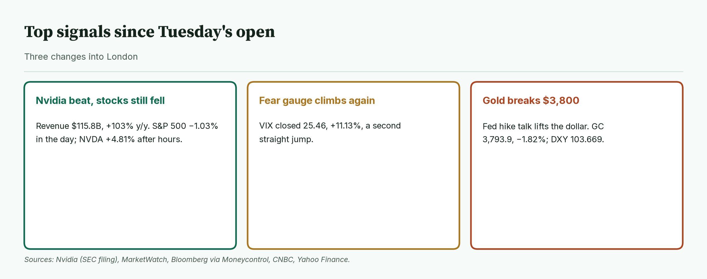
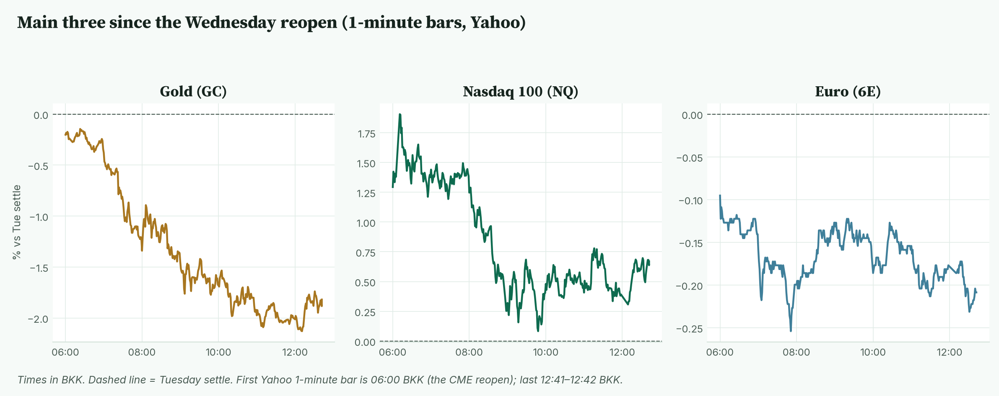
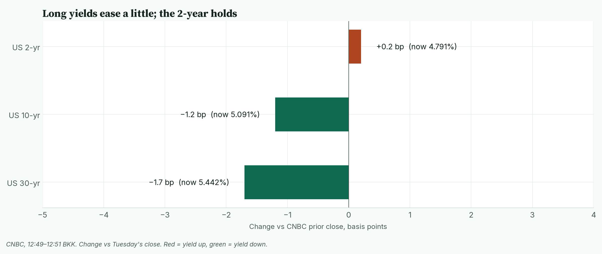
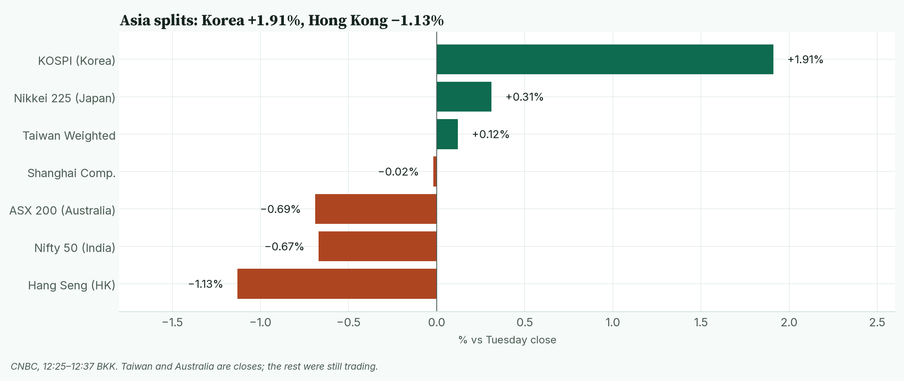
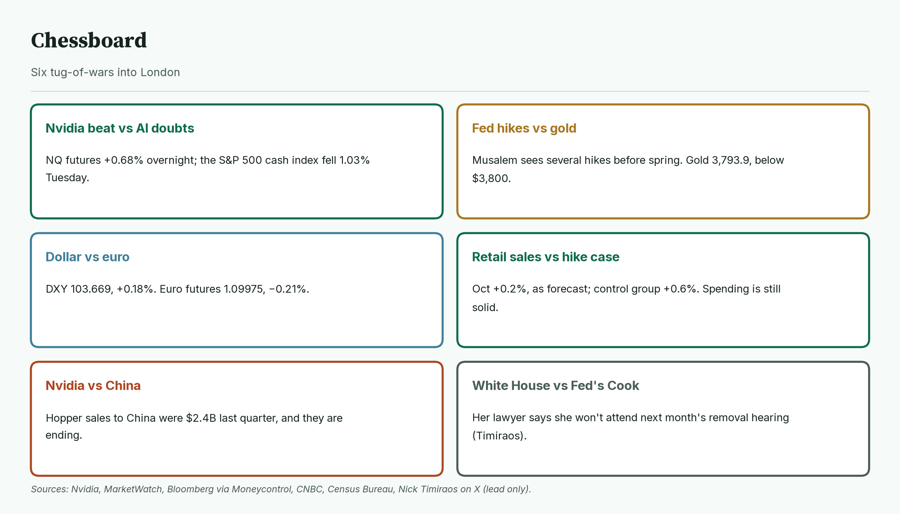
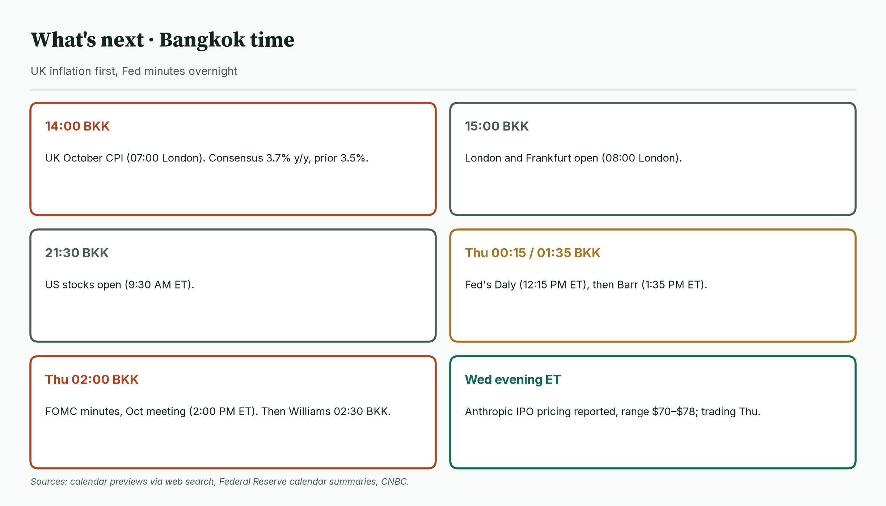
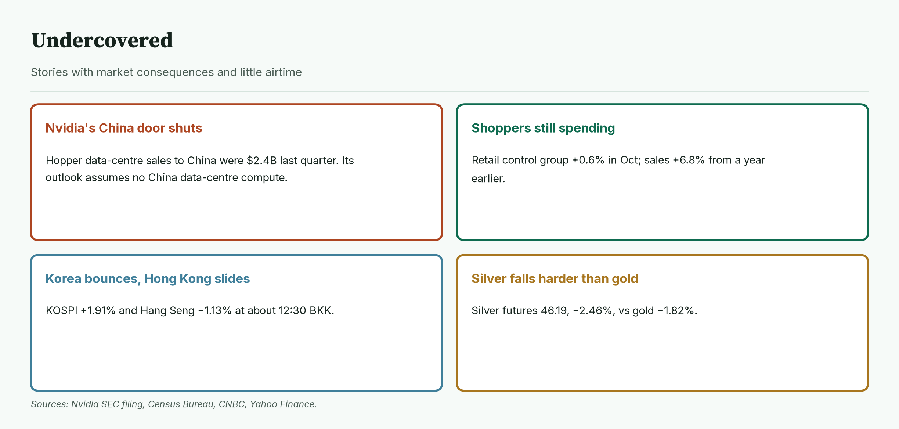
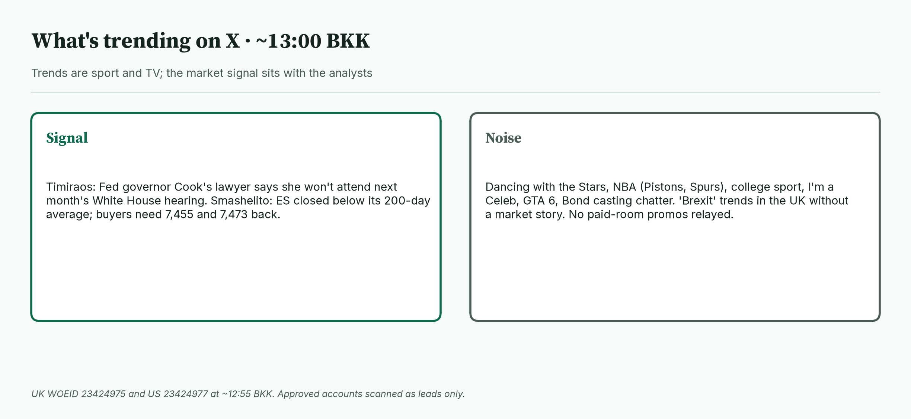

April · Market Intel, pre-London · Wed Nov 18, 2026 · ~13:00 BKK / ~06:00 London
Headline: Nvidia beat, but Wall Street still fell and the VIX rose 11.13% to 25.46. Overnight, gold futures broke below $3,800 to 3,793.9 (−1.82%) on Fed hike talk. Nasdaq futures are 27,259.25 (+0.68%) and euro futures 1.09975 (−0.21%). UK inflation at 14:00 BKK and the Fed minutes at 02:00 BKK Thursday decide the session.
So what: Nvidia's numbers calmed tech futures, but the Fed is the bigger force now. A rising dollar is pushing gold and the euro lower.
 Caption: Futures at 12:41–12:42 BKK versus Tuesday's settle. Gold is the big loser. The VIX tile is Tuesday's close.
Caption: Futures at 12:41–12:42 BKK versus Tuesday's settle. Gold is the big loser. The VIX tile is Tuesday's close.
1) Top signals Three changes since Tuesday's open. Nvidia beat, fear rose again, and gold broke $3,800. |
 Caption: Three changes since Tuesday's open. Nvidia beat, fear rose again, and gold broke $3,800.
Caption: Three changes since Tuesday's open. Nvidia beat, fear rose again, and gold broke $3,800.
- Nvidia beat, yet stocks fell. Revenue was $115.8 billion, up 103% from a year ago (Nvidia). The S&P 500 still fell 1.03% (AP).
- The VIX closed at 25.46, up 11.13%, its second straight jump (CNBC).
- Gold broke below $3,800 for the first time since September 2025 as Fed officials argued for more hikes (Bloomberg via Moneycontrol).
2) Main instruments The three main contracts since the Wednesday reopen, as a % move from Tuesday's settle. Nasdaq opened well up on Nvidia, then faded. Gold slid all session. |
 Caption: The three main contracts since the Wednesday reopen, as a % move from Tuesday's settle. Nasdaq opened well up on Nvidia, then faded. Gold slid all session.
(Quotes are Yahoo Finance futures at 12:41–12:42 BKK (05:41–05:42 London), matching CNBC. Session highs and lows use Yahoo 1-minute bars from the 06:00 BKK CME reopen (18:00 New York Tuesday). The first bar is 06:00 BKK.)
Caption: The three main contracts since the Wednesday reopen, as a % move from Tuesday's settle. Nasdaq opened well up on Nvidia, then faded. Gold slid all session.
(Quotes are Yahoo Finance futures at 12:41–12:42 BKK (05:41–05:42 London), matching CNBC. Session highs and lows use Yahoo 1-minute bars from the 06:00 BKK CME reopen (18:00 New York Tuesday). The first bar is 06:00 BKK.)
- Gold futures (GC, Dec): 3,793.9, −1.82%, at 12:42 BKK. Driver: St. Louis Fed's Musalem said the economy likely needs "several interest-rate increases" before spring (Bloomberg via Moneycontrol). Tuesday's settle was 3,864.2. Today's range is 3,781.7 (12:05 BKK) to 3,859.3 (06:23 BKK). It is near the low.
- Nasdaq 100 futures (NQ, Dec): 27,259.25, +0.68%, at 12:42 BKK. Driver: relief after Nvidia's beat and a $130 billion sales outlook for next quarter (Nvidia). Tuesday's settle was 27,075.50. Today's range is 27,093.00 (09:48 BKK) to 27,605.25 (06:12 BKK). Half the early gain is gone.
- Euro futures (6E, Dec): 1.09975, −0.21%, at 12:41 BKK. Driver: the dollar firmed on Fed hike talk. Tuesday's settle was 1.10205. Today's range is 1.09925 (07:51 BKK) to 1.10135 (06:00 BKK).
- Takeaway: tech got a lift from Nvidia, but the Fed is squeezing gold and the euro.
Context. The dollar index (DXY, the dollar against six major currencies) is 103.669, +0.18% (CNBC, 12:52 BKK). The 10-year US yield (what the US government pays to borrow for 10 years) is 5.091%, down 1.2 basis points (CNBC, 12:49 BKK; a basis point is 0.01 percentage point). The VIX (the "fear gauge" built from S&P 500 option prices) closed Tuesday at 25.46, +11.13% (CNBC). US oil (CL, December) is 84.87, −1.33% (Yahoo, 12:41 BKK). S&P 500 futures (ES) are 7,380.50, +0.29% (Yahoo, 12:42 BKK). Bitcoin is $64,619, +1.16% versus CNBC's previous close (CNBC/Coin Metrics, 12:52 BKK).
3) Overnight US session
- Stocks fell a fourth straight day. The S&P 500 closed at 7,340.53, down 1.03%. The Dow lost 848.75 points to 50,759.42. The Nasdaq Composite fell 0.74% to 24,328.38 (AP, Dow Jones via Morningstar).
- Nvidia closed at $155.46, −0.44%, then rose 4.81% to $162.94 after hours (MarketWatch, 7:59 PM ET).
- Nvidia's data-centre sales were a record $107.6 billion, up 110% from a year ago (Nvidia filing).
- Retail sales rose 0.2% in October, as forecast, after 0.8% in September. The "control group" (core sales that feed into GDP) rose 0.6% (Census Bureau, Reuters).
- Takeaway: good earnings and steady shoppers did not stop the selling. Rate fears did the damage.
4) Rates, FX and oil Long yields eased a little in Asia while the 2-year held. Markets still expect the Fed to keep hiking. |
 Caption: Long yields eased a little in Asia while the 2-year held. Markets still expect the Fed to keep hiking.
Caption: Long yields eased a little in Asia while the 2-year held. Markets still expect the Fed to keep hiking.
- CNBC, 12:49 to 12:51 BKK: 2-year 4.791% (+0.2 bp), 10-year 5.091% (−1.2 bp), 30-year 5.442% (−1.7 bp).
- Dollar. DXY is 103.669. EUR/USD is 1.0983 (CNBC, 12:52 BKK).
- Yen. USD/JPY is 159.31 (CNBC, 12:52 BKK), still just under 160.
- Oil. WTI 84.87 and Brent (January) 92.61, −0.57% (CNBC, 12:42 BKK).
- Takeaway: the dollar is firm, and that is the main weight on gold and the euro.
5) Why it matters Asia split. Korea bounced while Hong Kong slid. Taiwan and Australia are closes; the rest are CNBC prints from 12:25 to 12:37 BKK. |
 Caption: Asia split. Korea bounced while Hong Kong slid. Taiwan and Australia are closes; the rest are CNBC prints from 12:25 to 12:37 BKK.
Caption: Asia split. Korea bounced while Hong Kong slid. Taiwan and Australia are closes; the rest are CNBC prints from 12:25 to 12:37 BKK.
- Korea bounced: KOSPI +1.91%. Nikkei +0.31%, Taiwan +0.12% (CNBC).
- Hong Kong fell: Hang Seng −1.13%. ASX 200 −0.69%, Nifty −0.67% (CNBC).
- Europe fell hard Tuesday: Euro Stoxx 50 −2.15%, DAX −2.08%, FTSE 100 −1.76% (Yahoo Finance).
- Mentor: gold pays no interest. When the Fed signals more hikes, cash and bonds pay more, so holding gold costs more. That is why gold falls on hawkish Fed talk.
- Takeaway: London opens after a heavy Tuesday, with the dollar firm and chips calmer.
6) Chessboard Six tug-of-wars into London. The Fed and the dollar move the main three fastest. |
 Caption: Six tug-of-wars into London. The Fed and the dollar move the main three fastest.
Caption: Six tug-of-wars into London. The Fed and the dollar move the main three fastest.
- Nvidia beat vs AI doubts. NQ futures +0.68% overnight after the S&P 500 fell 1.03% Tuesday.
- Fed hikes vs gold. Musalem sees several hikes before spring. Gold is 3,793.9.
- Dollar vs euro. DXY 103.669. Euro futures 1.09975.
- Retail sales vs the hike case. October sales rose 0.2%, as forecast. Solid spending gives the Fed room to keep hiking.
- Nvidia vs China. Hopper sales to China were $2.4 billion last quarter (Nvidia filing). Its outlook assumes no China data-centre compute (Data Center Feed).
- White House vs Fed governor Cook. Her lawyer says she won't attend next month's hearing (Nick Timiraos on X, a lead only).
- Takeaway: the board leans hawkish. Rate talk matters more than earnings today.
7) Leading indicators (BKK times, ET in brackets) UK inflation opens the day, and the Fed minutes land overnight. |
 Caption: UK inflation opens the day, and the Fed minutes land overnight.
Caption: UK inflation opens the day, and the Fed minutes land overnight.
- 14:00 (2:00 AM ET): UK October CPI. Consensus 3.7% a year, prior 3.5% (calendar previews). This is London's decider.
- 15:00: London and Frankfurt open.
- 21:30 (9:30 AM ET): US stocks open.
- Thu 00:15 (12:15 PM ET): Fed's Daly. Thu 01:35 (1:35 PM ET): Fed's Barr.
- Thu 02:00 (2:00 PM ET): FOMC minutes from the October meeting. Then Williams at 02:30 BKK and Kashkari at 04:15 BKK. This is the US decider.
- Anthropic is reported to price its IPO Wednesday evening US time, with a filed range of $70 to $78 a share and trading Thursday (press reports).
- Takeaway: hot UK inflation or hawkish minutes would keep pressure on gold.
8) Scenarios and levels
- Hawkish (hot UK CPI or hawkish minutes). The dollar rises. Watch GC 3,781.7, NQ 27,093.00 and 6E 1.09925 for breaks lower.
- Steady (the base case). Ranges likely hold. GC 3,781.7 to 3,859.3, NQ 27,093.00 to 27,605.25, 6E 1.09925 to 1.10135.
- Softer (cool UK CPI, calmer minutes). Gold and the euro could recover toward 3,859.3 and 1.10135.
- These are possible paths, not forecasts.
9) Undercovered Four stories with little airtime. They touch China chips, US shoppers, Asia and silver. |
 Caption: Four stories with little airtime. They touch China chips, US shoppers, Asia and silver.
Caption: Four stories with little airtime. They touch China chips, US shoppers, Asia and silver.
- Nvidia's China door is shutting. Hopper data-centre sales to China were $2.4 billion last quarter (Nvidia filing), and reports say no more will ship.
- Shoppers are still spending. Retail sales are up 6.8% from a year earlier (Census Bureau).
- Korea and Hong Kong split. KOSPI +1.91%, Hang Seng −1.13% (CNBC).
- Silver is falling harder than gold. Silver futures are 46.19, −2.46% (CNBC, 12:42 BKK).
- Takeaway: the US consumer is fine, but the China tech fight keeps widening.
10) What's trending on X (~13:00 BKK) Trends are sport and TV. The market signal sits with the analysts. |
 Caption: Trends are sport and TV. The market signal sits with the analysts.
Caption: Trends are sport and TV. The market signal sits with the analysts.
- US: #dwts, Pistons, Spurs, Mary Peltola.
- UK: Bond, #ImACeleb, GTA 6, Brexit.
- Signal: no market story in the trend lists today.
- Approved accounts: Timiraos reported that Fed governor Lisa Cook's lawyer says she won't attend next month's White House hearing. Smashelito said ES closed below its 200-day average and buyers need 7,455 and 7,473 back. vwaptrader1 flagged $149.60 as Nvidia's after-hours line to hold; it held. Tavi Costa had no new posts. No paid-room promos relayed.
- Noise: Dancing with the Stars, NBA, college sport, I'm a Celeb, GTA 6, Bond casting chatter.
Bottom line: Nvidia bought tech a breather, but the Fed owns the tape. For Jim: Nasdaq at 27,259.25 sits mid-range, 27,093.00 to 27,605.25. Gold at 3,793.9 sits near its 3,781.7 low. The euro at 1.09975 sits near its 1.09925 low. Interpretive note: UK CPI at 14:00 BKK is the first test; the minutes are the bigger one. 🔮 Interpretive, not data: the 18th reduces to 9, the number of endings. Gold ending its stay above $3,800 fits the tag. Symbol, not signal.
Confidence: Futures levels: high (Yahoo, matching CNBC). Session ranges: Yahoo 1-minute bars from the 06:00 BKK reopen. Yields, DXY, VIX, yen, Bitcoin, Brent, silver and Asia: CNBC, time-stamped. Europe closes: Yahoo Finance. US closes: AP and Dow Jones via Morningstar. Nvidia results: Nvidia's SEC filing; after-hours price: MarketWatch. Retail sales: Census Bureau, Reuters. Musalem and gold: Bloomberg via Moneycontrol. UK CPI consensus, Fed speaker times and the Anthropic IPO: press previews, not primary. X posts: leads only. Removed: a FedWatch odds figure and claims about Nvidia's board and CEO (not confirmed by a primary source).
Charts: 2026-11-18-prelondon-assets/pre-london-{scoreboard,signals,main3,rates,asia,chess,leading,under,xsplit}.png |